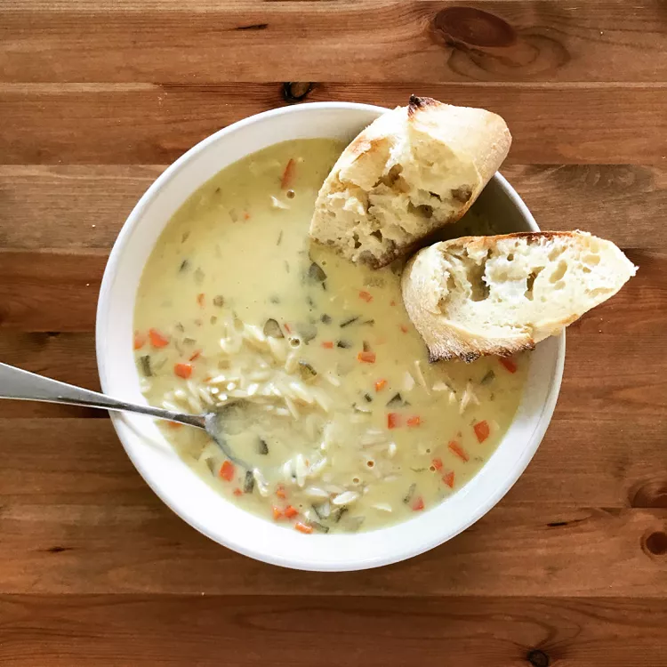

Greek Lemon Chicken Soup
Greek Lemon Chicken Soup
Description
This Greek lemon chicken soup is a perfect introduction to a full Greek meal or a hearty bowlful
for a meal in itself. Serve with fresh pita triangles, and you'll be sure to please your guests!
Ingredients
- 8 cups chicken broth
- 1/2 cup fresh lemon juice
- 1/2 cup shredded carrots
- 1/2 cup finely chopped onion
- 1/2 cup finely chopped celery
- 6 tablespoons chicken soup base
- 1/4 teaspoon ground white pepper
- 1/4 cup margarine
- 1/4 cup all-purpose flour
- 8 egg yolks
- 1 cup cooked white rice
- 1 cup diced, cooked chicken meat
- 16 slices lemon
Directions
- Combine chicken broth, lemon juice, carrots, onions, celery, soup base, and white pepper
in a large pot. Bring to a boil over high heat, then reduce heat and simmer for 15 to 20 minutes,
or until the vegetables are tender.
- Blend margarine and flour in a small bowl; gradually stir into soup mixture.
Simmer, stirring frequently, for 8 to 10 minutes.
- Meanwhile, beat egg yolks in a bowl until light in color.
Gradually whisk in some hot soup, using a ladle to pour in a thin stream while whisking the
egg yolks vigorously. Add egg mixture to the pot in same manner, and heat through.
- Add rice and chicken; cook until warmed through. Ladle hot soup into bowls and
garnish with lemon slices.